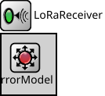

Package: Global.Transceiver
LoRaReceiver
compound moduleTODO auto-generated module

Usage diagram
The following diagram shows usage relationships between types. Unresolved types are missing from the diagram.
Inheritance diagram
The following diagram shows inheritance relationships for this type. Unresolved types are missing from the diagram.
Parameters
| Name | Type | Default value | Description |
|---|---|---|---|
| energyDetection | double |
no signal is detected at all below this reception power threshold (idle state) |
|
| sensitivity | double |
reception is not possible if the signal power is below sensitivity (idle or busy states) |
|
| snirThreshold | double |
reception is not successful if the SNIR is below this threshold (unsuccessful reception) |
|
| centerFrequency | double |
center frequency of the band where this receiver listens on the medium |
|
| bandwidth | double |
bandwidth of the band where this receiver listens on the medium |
|
| alohaChannelModel | bool | false | |
| errorModelType | string | "" |
NED type of the error model |
| ignoreInterference | bool | false |
Properties
| Name | Value | Description |
|---|---|---|
| class | transceiver::LoRaReceiver | |
| display | i=block/wrx |
Signals
| Name | Type | Unit |
|---|---|---|
| LoRaReceptionCollision | bool |
Statistics
| Name | Title | Source | Record | Unit | Interpolation Mode |
|---|---|---|---|---|---|
| LoRaReceptionCollision | LoRaReceptionCollision | vector |
Source code
// // TODO auto-generated module // module LoRaReceiver like IReceiver { parameters: @signal[LoRaReceptionCollision](type=bool); // optional @statistic[LoRaReceptionCollision](source=LoRaReceptionCollision; record=vector); // record=count double energyDetection @unit(dBm); // no signal is detected at all below this reception power threshold (idle state) double sensitivity @unit(dBm); // reception is not possible if the signal power is below sensitivity (idle or busy states) double snirThreshold @unit(dB); // reception is not successful if the SNIR is below this threshold (unsuccessful reception) double centerFrequency @unit(Hz); // center frequency of the band where this receiver listens on the medium double bandwidth @unit(Hz); // bandwidth of the band where this receiver listens on the medium bool alohaChannelModel = default(false); string errorModelType = default(""); // NED type of the error model bool ignoreInterference = default(false); @class(transceiver::LoRaReceiver); @display("i=block/wrx"); submodules: errorModel: <errorModelType> like IErrorModel if errorModelType != ""; }File: src/Global/Transceiver/LoRaReceiver.ned
 This documentation is released under the Creative Commons license
This documentation is released under the Creative Commons license